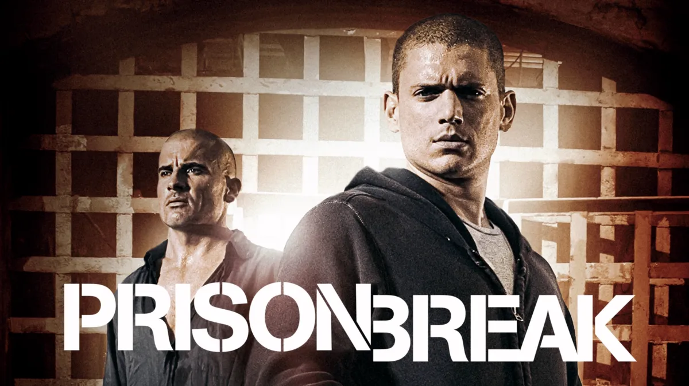

Prison Break Em Busca da Verdade!!
Seja Bem Vindo(a) ao nosso site!
Site criado para fãs da série Prison Break
Sobre a Série
- Prison Break é uma série de televisão americana criada por Paul Scheuring, que estreou em 29 de agosto de 2005 na Fox. A série segue a história de Michael Scofield, um engenheiro estrutural que elabora um plano para ajudar seu irmão Lincoln Burrows a escapar da prisão após ser condenado injustamente à morte.
- A trama se desenrola em torno das tentativas de fuga, conspirações governamentais e a luta dos personagens para provar a inocência de Lincoln. A série é conhecida por seus enredos complexos, reviravoltas emocionantes e desenvolvimento profundo dos personagens.
- Prison Break conquistou uma base de fãs leal e recebeu críticas positivas por sua narrativa envolvente e suspense constante. A série teve um total de cinco temporadas, com a última sendo lançada em 2017.
Conheça os personagens da série
